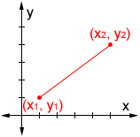
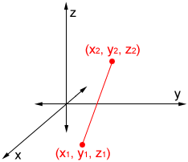
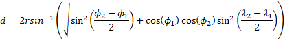
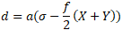
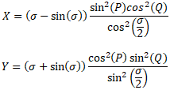

Distance Calculator
The calculators below can be used to find the distance between two points on a 2D plane or 3D space. They can also be used to find the distance between two pairs of latitude and longitude, or two chosen points on a map.
2D Distance Calculator
Use this calculator to find the distance between two points on a 2D coordinate plane.

3D Distance Calculator
Use this calculator to find the distance between two points on a 3D coordinate space.

Distance Based on Latitude and Longitude
Use this calculator to find the shortest distance (great circle/air distance) between two points on the Earth's surface.
Distance on Map
Click the map below to set two points on the map and find the shortest distance (great circle/air distance) between them. Once created, the marker(s) can be repositioned by clicking and holding, then dragging them.
Distance in a coordinate system
Distance in a 2D coordinate plane:
The distance between two points on a 2D coordinate plane can be found using the following distance formula
d = √(x2 - x1)2 + (y2 - y1)2
where (x1, y1) and (x2, y2) are the coordinates of the two points involved. The order of the points does not matter for the formula as long as the points chosen are consistent. For example, given the two points (1, 5) and (3, 2), either 3 or 1 could be designated as x1 or x2 as long as the corresponding y-values are used:
Using (1, 5) as (x1, y1) and (3, 2) as (x2, y2):
| d = | √(3 - 1)2 + (2 - 5)2 |
| = | √22 + (-3)2 |
| = | √4 + 9 |
| = | √13 |
Using (3, 2) as (x1, y1) and (1, 5) as (x2, y2):
| d = | √(1 - 3)2 + (5 - 2)2 |
| = | √(-2)2 + 32 |
| = | √4 + 9 |
| = | √13 |
In either case, the result is the same.
Distance in a 3D coordinate space:
The distance between two points on a 3D coordinate plane can be found using the following distance formula
d = √(x2 - x1)2 + (y2 - y1)2 + (z2 - z1)2
where (x1, y1, z1) and (x2, y2, z2) are the 3D coordinates of the two points involved. Like the 2D version of the formula, it does not matter which of two points is designated (x1, y1, z1) or (x2, y2, z2), as long as the corresponding points are used in the formula. Given the two points (1, 3, 7) and (2, 4, 8), the distance between the points can be found as follows:
| d = | √(2 - 1)2 + (4 - 3)2 + (8 - 7)2 |
| = | √12 + 12 + 12 |
| = | √3 |
Distance between two points on Earth's surface
There are a number of ways to find the distance between two points along the Earth's surface. The following are two common formulas.
Haversine formula:
The haversine formula can be used to find the distance between two points on a sphere given their latitude and longitude:

In the haversine formula, d is the distance between two points along a great circle, r is the radius of the sphere, ϕ1 and ϕ2 are the latitudes of the two points, and λ1 and λ2 are the longitudes of the two points, all in radians.
The haversine formula works by finding the great-circle distance between points of latitude and longitude on a sphere, which can be used to approximate distance on the Earth (since it is mostly spherical). A great circle (also orthodrome) of a sphere is the largest circle that can be drawn on any given sphere. It is formed by the intersection of a plane and the sphere through the center point of the sphere. The great-circle distance is the shortest distance between two points along the surface of a sphere.
Results using the haversine formula may have an error of up to 0.5% because the Earth is not a perfect sphere, but an ellipsoid with a radius of 6,378 km (3,963 mi) at the equator and a radius of 6,357 km (3,950 mi) at a pole. Because of this, Lambert's formula (an ellipsoidal-surface formula), more precisely approximates the surface of the Earth than the haversine formula (a spherical-surface formula) can.
Lambert's formula:
Lambert's formula (the formula used by the calculators above) is the method used to calculate the shortest distance along the surface of an ellipsoid. When used to approximate the Earth and calculate the distance on the Earth surface, it has an accuracy on the order of 10 meters over thousands of kilometers, which is more precise than the haversine formula.
Lambert's formula is as follows:

where a is the equatorial radius of the ellipsoid (in this case the Earth), σ is the central angle in radians between the points of latitude and longitude (found using a method such as the haversine formula), f is the flattening of the Earth, and X and Y are expanded below.

Where P = (β1 + β2)/2 and Q = (β2 - β1)/2
In the expressions above, β1 and β1 are reduced latitudes using the equation below:
tan(β) = (1 - f)tan(ϕ)
where ϕ is the latitude of a point.
Note that neither the haversine formula nor Lambert's formula provides an exact distance because it is not possible to account for every irregularity on the surface of the Earth.